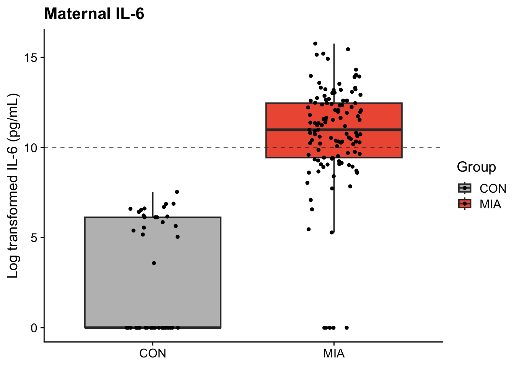
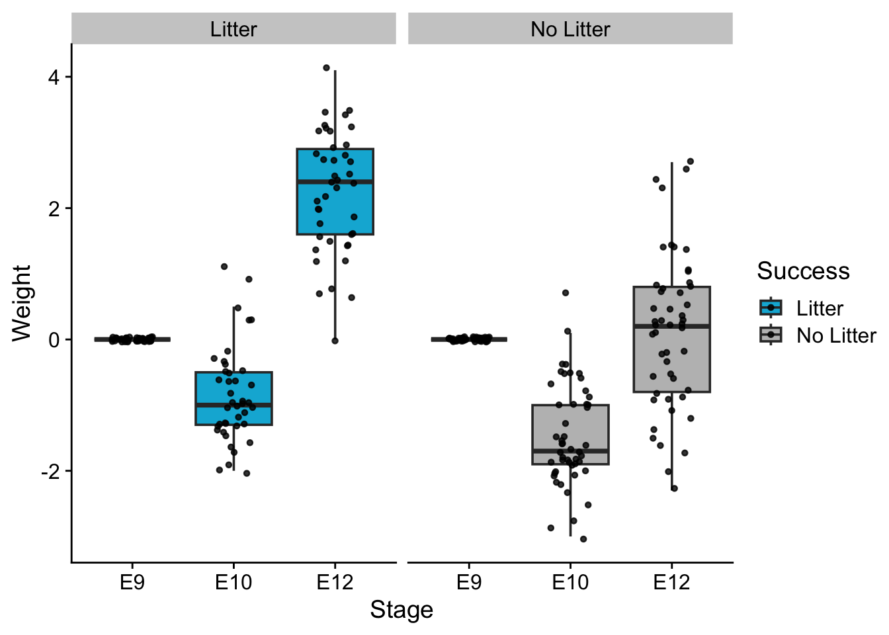
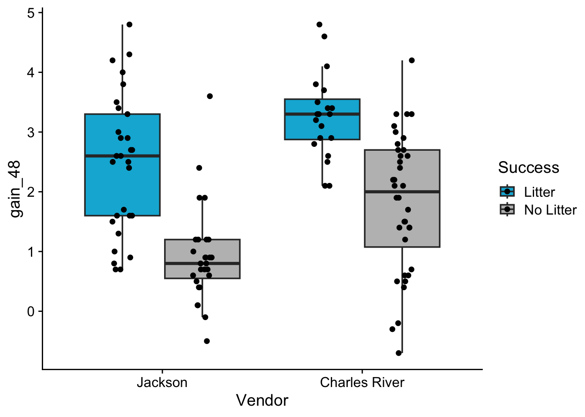
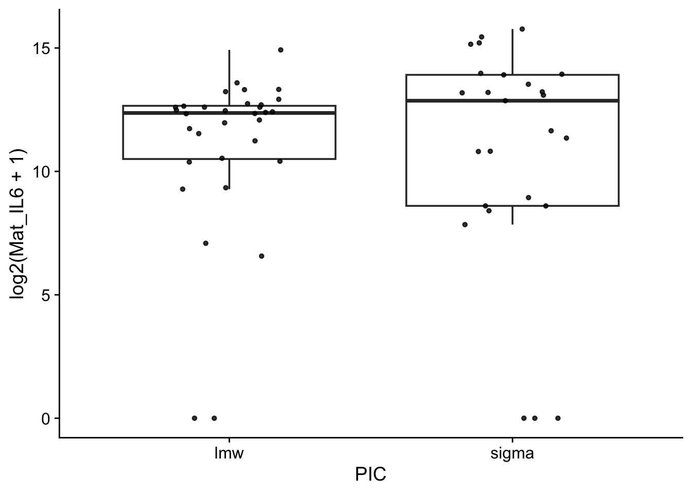

knitr::opts_chunk$set(warning = FALSE)
library(tidyverse)
library(ggplot2)
library(cowplot)
library(dplyr)
library(tidyr)
library(ggpubr)
library(rstatix)
library(svglite)JoVE MIA Generation Protocol
Load Packages
Load Data
data <- read.csv("Combined_data.csv")
tnfa <- read.csv("TNFa.csv")
clean <- data |>
filter(
Trt_Stage == 9.5,
Lost_Litter != "",
between(X24_loss, -4, 10),
Mat_IL6 != "") |>
mutate(
gain_48 = E12 - E10,
plug_gain = E9 - E0.5,
change_E9 = E9 - E9,
change_E10 = E10 - E9,
change_E12 = E12 - E9,
Success = ifelse(Lost_Litter == "no", "Litter", "No Litter"),
Vendor = case_when(Vendor %in% c("J", "JN") ~ "J", Vendor == "R" ~ "R", TRUE ~ Vendor))
data_long <- clean %>%
pivot_longer(
cols = c(change_E9, change_E10, change_E12),
names_to = "Stage",
values_to = "Weight")
data_long <- data_long %>%
mutate(Stage = factor(Stage, levels = c("change_E9", "change_E10", "change_E12")))Figure 2: Maternal IL-6
Figure 2A
clean |>
ggplot(aes(x = factor(Group, levels = c("CON", "MIA")), y = log2(Mat_IL6 + 1), fill = Group)) +
geom_boxplot(outlier.shape = NA) +
scale_fill_manual(values = c("CON" = "grey", "MIA" = "tomato2")) +
geom_jitter(size = 1, width = 0.15) +
labs(title = "Maternal IL-6", x = NULL, y = "Log transformed IL-6 (pg/mL)") +
theme_cowplot() +
geom_hline(yintercept = 10, linetype = "dashed", color = "gray20", linewidth = 0.2)
Stats 2A
con <- clean |> filter(Group == "CON") |> mutate(Log2 = log2(Mat_IL6 + 1))
shapiro.test(con$Log2)
Shapiro-Wilk normality test
data: con$Log2
W = 0.72505, p-value = 2.005e-07mia <- clean |> filter(Group == "MIA") |> mutate(Log2 = log2(Mat_IL6 + 1))
shapiro.test(mia$Log2)
Shapiro-Wilk normality test
data: mia$Log2
W = 0.8283, p-value = 1.654e-10clean |>
wilcox_test(Mat_IL6 ~ Group)# A tibble: 1 × 7
.y. group1 group2 n1 n2 statistic p
* <chr> <chr> <chr> <int> <int> <dbl> <dbl>
1 Mat_IL6 CON MIA 41 120 223 3.36e-18m_only <- clean |> filter(Group == "MIA")
total <- nrow(m_only)
below <- sum(m_only$Mat_IL6 < 1000)
above <- sum(m_only$Mat_IL6 > 1000)
data.frame(
group = c("<1000", ">1000"),
count = c(below, above),
percent = c(below, above) / total * 100) group count percent
1 <1000 37 30.83333
2 >1000 83 69.16667Figure 2B
tnfa %>%
mutate(TNFa = pmax(TNFa, 0)) %>%
mutate(IL6 = pmax(IL6, 0)) %>%
ggplot(aes(x = TNFa, y = IL6)) +
geom_point(size = 1, position = position_jitterdodge(jitter.width = 0.5, dodge.width = 0.1)) +
geom_smooth(method = "lm", color = "grey40", linewidth = 0.7) +
labs(title = "Maternal TNF-a vs IL-6", x = "TNF-a (pg/mL)", y = "IL-6 (pg/mL)") +
theme_cowplot()`geom_smooth()` using formula = 'y ~ x'
Stats 2B
shapiro.test(tnfa$TNFa)
Shapiro-Wilk normality test
data: tnfa$TNFa
W = 0.84932, p-value = 4.197e-05shapiro.test(tnfa$IL6)
Shapiro-Wilk normality test
data: tnfa$IL6
W = 0.73188, p-value = 1.285e-07cor.test(tnfa$IL6, tnfa$TNFa, method = "spearman")
Spearman's rank correlation rho
data: tnfa$IL6 and tnfa$TNFa
S = 2344, p-value = 1.883e-12
alternative hypothesis: true rho is not equal to 0
sample estimates:
rho
0.8348144 Figure 3: Weights
Figure 3A
clean %>%
filter(Cohort != "1") %>%
group_by(Group) |>
ggplot(aes(x = Success, y = plug_gain, fill = Success, color = Group)) +
geom_boxplot(outlier.shape = NA, color = "black") +
geom_jitter(size = 1, width = 0.1) +
scale_fill_manual(values = c("#00b4d8", "grey")) +
scale_color_manual(values = c("red", "grey20")) +
theme_cowplot() +
scale_y_continuous(limits = c(-1,6))
Stats 3A
litter <- clean |> filter(Cohort != "1", Success == "Litter")
no <- clean |> filter(Cohort != "1", Success == "No Litter")
shapiro.test(litter$plug_gain)
Shapiro-Wilk normality test
data: litter$plug_gain
W = 0.98384, p-value = 0.5147shapiro.test(no$plug_gain)
Shapiro-Wilk normality test
data: no$plug_gain
W = 0.96831, p-value = 0.1091clean %>%
t_test(plug_gain ~ Success)# A tibble: 1 × 8
.y. group1 group2 n1 n2 statistic df p
* <chr> <chr> <chr> <int> <int> <dbl> <dbl> <dbl>
1 plug_gain Litter No Litter 83 77 5.54 148. 0.000000135litter %>%
summarise(
mean = mean(plug_gain, na.rm = TRUE),
se = sd(plug_gain, na.rm = TRUE) / sqrt(n())) mean se
1 2.482609 0.1102187no %>%
summarise(
mean = mean(plug_gain, na.rm = TRUE),
se = sd(plug_gain, na.rm = TRUE) / sqrt(n())) mean se
1 1.443548 0.1659488Figure 3B
data_long %>%
filter(Cohort != "1", E12 != "", Group == "CON") %>%
ggplot(aes(x = Stage, y = Weight, fill = Success)) +
geom_boxplot(outlier.shape = NA) +
geom_jitter(width = 0.2, size = 1, alpha = 0.8) +
scale_fill_manual(values = c("#00b4d8", "grey")) +
scale_x_discrete(labels = c("change_E9" = "E9", "change_E10" = "E10", "change_E12" = "E12")) +
facet_wrap(~ Success) +
theme_cowplot() 
Stats 3B
L_CON_change_E10 <- data_long |>
filter(Group == "CON", Stage == "change_E10", Success == "Litter")
shapiro.test(L_CON_change_E10$Weight)
Shapiro-Wilk normality test
data: L_CON_change_E10$Weight
W = 0.92529, p-value = 0.03687L_CON_change_E10 <- data_long |>
filter(Group == "CON", Stage == "change_E10", Success == "Litter") |> pull(Weight)
wilcox.test(L_CON_change_E10, mu = 0)
Wilcoxon signed rank test with continuity correction
data: L_CON_change_E10
V = 347, p-value = 0.001077
alternative hypothesis: true location is not equal to 0length(L_CON_change_E10)[1] 30NL_CON_change_E10 <- data_long |>
filter(Group == "CON", Stage == "change_E10", Success == "No Litter")
shapiro.test(NL_CON_change_E10$Weight)
Shapiro-Wilk normality test
data: NL_CON_change_E10$Weight
W = 0.88642, p-value = 0.1254NL_CON_change_E10 <- data_long |>
filter(Group == "CON", Stage == "change_E10", Success == "No Litter") |> pull(Weight)
t.test(NL_CON_change_E10, mu = 0)
One Sample t-test
data: NL_CON_change_E10
t = 0.1541, df = 10, p-value = 0.8806
alternative hypothesis: true mean is not equal to 0
95 percent confidence interval:
-0.4894297 0.5621570
sample estimates:
mean of x
0.03636364 length(NL_CON_change_E10)[1] 11L_CON_change_E12 <- data_long |>
filter(Group == "CON", Stage == "change_E12", Success == "Litter")
shapiro.test(L_CON_change_E12$Weight)
Shapiro-Wilk normality test
data: L_CON_change_E12$Weight
W = 0.95329, p-value = 0.2227L_CON_change_E12 <- data_long |>
filter(Group == "CON", Stage == "change_E12", Success == "Litter") |> pull(Weight)
t.test(L_CON_change_E12, mu = 0)
One Sample t-test
data: L_CON_change_E12
t = 11.749, df = 28, p-value = 2.449e-12
alternative hypothesis: true mean is not equal to 0
95 percent confidence interval:
2.434248 3.462303
sample estimates:
mean of x
2.948276 length(L_CON_change_E12)[1] 30NL_CON_change_E12 <- data_long |>
filter(Group == "CON", Stage == "change_E12", Success == "No Litter")
shapiro.test(NL_CON_change_E12$Weight)
Shapiro-Wilk normality test
data: NL_CON_change_E12$Weight
W = 0.94227, p-value = 0.6335NL_CON_change_E12 <- data_long |>
filter(Group == "CON", Stage == "change_E12", Success == "No Litter") |> pull(Weight)
t.test(NL_CON_change_E12, mu = 0 )
One Sample t-test
data: NL_CON_change_E12
t = -0.070557, df = 7, p-value = 0.9457
alternative hypothesis: true mean is not equal to 0
95 percent confidence interval:
-1.294265 1.219265
sample estimates:
mean of x
-0.0375 length(NL_CON_change_E12)[1] 11wilcox.test(NL_CON_change_E10, L_CON_change_E10)
Wilcoxon rank sum test with continuity correction
data: NL_CON_change_E10 and L_CON_change_E10
W = 104, p-value = 0.07475
alternative hypothesis: true location shift is not equal to 0t.test(NL_CON_change_E12, L_CON_change_E12)
Welch Two Sample t-test
data: NL_CON_change_E12 and L_CON_change_E12
t = -5.08, df = 10.34, p-value = 0.0004305
alternative hypothesis: true difference in means is not equal to 0
95 percent confidence interval:
-4.289543 -1.682009
sample estimates:
mean of x mean of y
-0.037500 2.948276 Figure 3C
data_long %>%
filter(Cohort != "1", E12 != "", Group == "MIA") %>%
ggplot(aes(x = Stage, y = Weight, fill = Success)) +
geom_boxplot(outlier.shape = NA) +
geom_jitter(width = 0.2, size = 1, alpha = 0.8) +
scale_fill_manual(values = c("#00b4d8", "grey")) +
scale_x_discrete(labels = c("change_E9" = "E9", "change_E10" = "E10", "change_E12" = "E12")) +
facet_wrap(~ Success) +
theme_cowplot()
Stats 3C
L_MIA_change_E10 <- data_long |>
filter(Group == "MIA", Stage == "change_E10", Success == "Litter")
shapiro.test(L_MIA_change_E10$Weight)
Shapiro-Wilk normality test
data: L_MIA_change_E10$Weight
W = 0.90168, p-value = 0.0003688L_MIA_change_E10 <- data_long |>
filter(Group == "MIA", Stage == "change_E10", Success == "Litter") |> pull(Weight)
wilcox.test(L_MIA_change_E10, mu = 0)
Wilcoxon signed rank test with continuity correction
data: L_MIA_change_E10
V = 347, p-value = 0.001116
alternative hypothesis: true location is not equal to 0length(L_MIA_change_E10)[1] 53NL_MIA_change_E10 <- data_long |>
filter(Group == "MIA", Stage == "change_E10", Success == "No Litter")
shapiro.test(NL_MIA_change_E10$Weight)
Shapiro-Wilk normality test
data: NL_MIA_change_E10$Weight
W = 0.90663, p-value = 0.0001011NL_MIA_change_E10 <- data_long |>
filter(Group == "MIA", Stage == "change_E10", Success == "No Litter") |> pull(Weight)
wilcox.test(NL_MIA_change_E10, mu = 0)
Wilcoxon signed rank test with continuity correction
data: NL_MIA_change_E10
V = 402.5, p-value = 4.245e-06
alternative hypothesis: true location is not equal to 0length(NL_MIA_change_E10)[1] 67L_MIA_change_E12 <- data_long |>
filter(Group == "MIA", Stage == "change_E12", Success == "Litter")
shapiro.test(L_MIA_change_E12$Weight)
Shapiro-Wilk normality test
data: L_MIA_change_E12$Weight
W = 0.97903, p-value = 0.5252L_MIA_change_E12 <- data_long |>
filter(Group == "MIA", Stage == "change_E12", Success == "Litter") |> pull(Weight)
t.test(L_MIA_change_E12, mu = 0)
One Sample t-test
data: L_MIA_change_E12
t = 18.289, df = 48, p-value < 2.2e-16
alternative hypothesis: true mean is not equal to 0
95 percent confidence interval:
2.045334 2.550584
sample estimates:
mean of x
2.297959 length(L_MIA_change_E12)[1] 53NL_MIA_change_E12 <- data_long |>
filter(Group == "MIA", Stage == "change_E12", Success == "No Litter")
shapiro.test(NL_MIA_change_E12$Weight)
Shapiro-Wilk normality test
data: NL_MIA_change_E12$Weight
W = 0.98077, p-value = 0.4282NL_MIA_change_E12 <- data_long |>
filter(Group == "MIA", Stage == "change_E12", Success == "No Litter") |> pull(Weight)
t.test(NL_MIA_change_E12, mu = 0 )
One Sample t-test
data: NL_MIA_change_E12
t = 3.1759, df = 62, p-value = 0.002328
alternative hypothesis: true mean is not equal to 0
95 percent confidence interval:
0.2117642 0.9310930
sample estimates:
mean of x
0.5714286 length(NL_MIA_change_E12)[1] 67wilcox.test(NL_MIA_change_E10, L_MIA_change_E10)
Wilcoxon rank sum test with continuity correction
data: NL_MIA_change_E10 and L_MIA_change_E10
W = 1289.5, p-value = 0.01023
alternative hypothesis: true location shift is not equal to 0wilcox.test(NL_MIA_change_E12, L_MIA_change_E12)
Wilcoxon rank sum test with continuity correction
data: NL_MIA_change_E12 and L_MIA_change_E12
W = 488, p-value = 6.013e-10
alternative hypothesis: true location shift is not equal to 0data_long |> filter(Group == "MIA", Success == "Litter", Stage == "change_E10") |>
summarise(
mean = mean(Weight, na.rm = TRUE),
se = sd(Weight, na.rm = TRUE) / sqrt(n()))# A tibble: 1 × 2
mean se
<dbl> <dbl>
1 -0.545 0.144data_long |> filter(Group == "MIA", Success == "No Litter", Stage == "change_E10") |>
summarise(
mean = mean(Weight, na.rm = TRUE),
se = sd(Weight, na.rm = TRUE) / sqrt(n()))# A tibble: 1 × 2
mean se
<dbl> <dbl>
1 -0.922 0.167data_long |> filter(Group == "MIA", Success == "Litter", Stage == "change_E12") |>
summarise(
mean = mean(Weight, na.rm = TRUE),
se = sd(Weight, na.rm = TRUE) / sqrt(n()))# A tibble: 1 × 2
mean se
<dbl> <dbl>
1 2.30 0.121data_long |> filter(Group == "MIA", Success == "No Litter", Stage == "change_E12") |>
summarise(
mean = mean(Weight, na.rm = TRUE),
se = sd(Weight, na.rm = TRUE) / sqrt(n()))# A tibble: 1 × 2
mean se
<dbl> <dbl>
1 0.571 0.174Figure 4
Figure 4A
clean |>
ggplot(aes(x = Group, y = E0.5, fill = Success )) +
geom_boxplot(outlier.shape = NA) +
geom_point(position = position_jitterdodge(dodge.width = 0.75, jitter.width = 0.1)) +
theme_cowplot() + scale_fill_manual(values = c("#00b4d8", "grey")) +
labs(y = "starting weight (g)") +
ylim(15,25)
Stats 4A
a <- clean |> filter(Group == "CON", Success == "Litter")
shapiro.test(a$E0.5)
Shapiro-Wilk normality test
data: a$E0.5
W = 0.97274, p-value = 0.6164nrow(a)[1] 30b <- clean |> filter(Group == "CON", Success == "No Litter")
shapiro.test(b$E0.5)
Shapiro-Wilk normality test
data: b$E0.5
W = 0.97519, p-value = 0.9336nrow(b)[1] 11c <- clean |> filter(Group == "MIA", Success == "Litter")
shapiro.test(c$E0.5)
Shapiro-Wilk normality test
data: c$E0.5
W = 0.86029, p-value = 1.837e-05nrow(c)[1] 53d <- clean |> filter(Group == "MIA", Success == "No Litter")
shapiro.test(d$E0.5)
Shapiro-Wilk normality test
data: d$E0.5
W = 0.98278, p-value = 0.4911nrow(d)[1] 67clean |>
filter(Group == "CON") |>
t_test(E0.5 ~ Success)# A tibble: 1 × 8
.y. group1 group2 n1 n2 statistic df p
* <chr> <chr> <chr> <int> <int> <dbl> <dbl> <dbl>
1 E0.5 Litter No Litter 30 11 1.17 14.6 0.262clean |>
filter(Group == "MIA") |>
wilcox_test(E0.5 ~ Success)# A tibble: 1 × 7
.y. group1 group2 n1 n2 statistic p
* <chr> <chr> <chr> <int> <int> <dbl> <dbl>
1 E0.5 Litter No Litter 53 66 1892. 0.448clean |>
filter(Success == "Litter") |>
wilcox_test(E0.5 ~ Group)# A tibble: 1 × 7
.y. group1 group2 n1 n2 statistic p
* <chr> <chr> <chr> <int> <int> <dbl> <dbl>
1 E0.5 CON MIA 30 53 874 0.457clean |>
filter(Success == "No Litter") |>
t_test(E0.5 ~ Group)# A tibble: 1 × 8
.y. group1 group2 n1 n2 statistic df p
* <chr> <chr> <chr> <int> <int> <dbl> <dbl> <dbl>
1 E0.5 CON MIA 11 66 -0.265 13.1 0.795Figure 4B
clean_v <- clean |>
mutate(Vendor_bin = case_when(Vendor == "J" ~ "J", Vendor == "R" ~ "R", TRUE ~ NA_character_),
Success = ifelse(Lost_Litter == "no", "Litter", "No Litter")) |>
filter(!is.na(Vendor_bin)) |>
filter(Cohort != "1") |>
filter(PIC != 'none')
plot_v <- clean_v |>
group_by(Vendor_bin, Success) |>
summarise(n = n(), .groups = "drop") |>
group_by(Vendor_bin) |>
mutate(percent = n / sum(n) * 100)
plot_v <- plot_v |>
mutate(label = paste0(round(percent), "%"))
n_v <- clean_v |>
group_by(Vendor_bin) |>
summarise(n = n(), .groups = "drop")
plot_v |>
group_by(Vendor_bin) |>
ggplot(aes(x = Vendor_bin, y = percent, fill = Success)) +
geom_bar(stat = "identity", color = "black", size = 0.6) +
geom_text(aes(label = label),
position = position_stack(vjust = 0.5),
color = "white", size = 3) +
scale_x_discrete(labels = c("J" = "Jackson", "R" = "Charles River")) +
geom_text(data = n_v, aes(x = Vendor_bin, y = 105, label = paste0("n=", n)),
inherit.aes = FALSE, size = 3) +
scale_fill_manual(values = c("Litter" = "#00b4d8", "No Litter" = "grey")) +
labs(x = "", y = "Percentage of Litter Success", fill = "") +
theme_cowplot()
Stats 4B
clean_v |>
filter(Vendor == "J") |>
nrow()[1] 35clean_v |>
filter(Vendor == "R") |>
nrow()[1] 63clean_v |>
group_by(Success, Vendor_bin) |>
tally() |> spread(key = Success, value = n) |>
select(Litter, `No Litter`) |>
fisher.test()
Fisher's Exact Test for Count Data
data: select(spread(tally(group_by(clean_v, Success, Vendor_bin)), key = Success, value = n), Litter, `No Litter`)
p-value = 0.05631
alternative hypothesis: true odds ratio is not equal to 1
95 percent confidence interval:
0.9650207 6.2148706
sample estimates:
odds ratio
2.414653 Figure 4C
clean |>
filter(Group == "MIA", PIC == "lmw") |>
ggplot(aes(x = Vendor, y = log2(Mat_IL6 + 1))) +
geom_boxplot(outlier.shape = NA) +
geom_jitter(width = 0.2, size = 1.5) +
scale_x_discrete(labels = c("J" = "Jackson", "R" = "Charles River")) +
theme_cowplot() +
geom_hline(yintercept = 10, linetype = "dashed", color = "gray4", linewidth = 0.2) 
Stats 4C
c3 <- clean |> filter(Group == "MIA", Vendor == "J", PIC == "lmw") |> mutate(log2_IL6 = log2(Mat_IL6 + 1))
shapiro.test(c3$log2_IL6)
Shapiro-Wilk normality test
data: c3$log2_IL6
W = 0.68912, p-value = 6e-07nrow(c3)[1] 32c4 <- clean |> filter(Group == "MIA", Vendor == "R", PIC == "lmw") |> mutate(log2_IL6 = log2(Mat_IL6 + 1))
shapiro.test(c4$log2_IL6)
Shapiro-Wilk normality test
data: c4$log2_IL6
W = 0.84252, p-value = 1.146e-06nrow(c4)[1] 63clean |>
filter(Group == "MIA", PIC == "lmw") |>
wilcox_test(Mat_IL6 ~ Vendor)# A tibble: 1 × 7
.y. group1 group2 n1 n2 statistic p
* <chr> <chr> <chr> <int> <int> <dbl> <dbl>
1 Mat_IL6 J R 32 63 1454. 0.000445Figure 4D
clean |>
filter(Group == "MIA") |>
ggplot(aes(x = Vendor, y = gain_48, fill = Success)) +
geom_boxplot(outlier.shape = NA, position = position_dodge(width = 0.8)) +
geom_point(position = position_jitterdodge(jitter.width = 0.2, dodge.width = 0.8),
size = 1.5) +
scale_fill_manual(values = c("#00b4d8", "grey")) +
scale_x_discrete(labels = c("J" = "Jackson", "R" = "Charles River")) +
theme_cowplot()
Stats 4D
e <- clean |> filter(Group == "MIA", Success == "Litter", Vendor == "J")
shapiro.test(e$gain_48)
Shapiro-Wilk normality test
data: e$gain_48
W = 0.95877, p-value = 0.3065nrow(e)[1] 29f <- clean |> filter(Group == "MIA", Success == "No Litter", Vendor == "J")
shapiro.test(f$gain_48)
Shapiro-Wilk normality test
data: f$gain_48
W = 0.88361, p-value = 0.005753nrow(f)[1] 28g <- clean |> filter(Group == "MIA", Success == "Litter", Vendor == "R")
shapiro.test(g$gain_48)
Shapiro-Wilk normality test
data: g$gain_48
W = 0.96264, p-value = 0.5978nrow(g)[1] 24h <- clean |> filter(Group == "MIA", Success == "No Litter", Vendor == "R")
shapiro.test(h$gain_48)
Shapiro-Wilk normality test
data: h$gain_48
W = 0.9736, p-value = 0.5317nrow(h)[1] 39clean |>
filter(Vendor == "J") |>
filter(Group == "MIA") |>
wilcox_test(gain_48 ~ Success)# A tibble: 1 × 7
.y. group1 group2 n1 n2 statistic p
* <chr> <chr> <chr> <int> <int> <dbl> <dbl>
1 gain_48 Litter No Litter 29 27 678. 0.0000028clean |>
filter(Vendor == "R") |>
filter(Group == "MIA") |>
t_test(gain_48 ~ Success)# A tibble: 1 × 8
.y. group1 group2 n1 n2 statistic df p
* <chr> <chr> <chr> <int> <int> <dbl> <dbl> <dbl>
1 gain_48 Litter No Litter 20 36 5.73 53.4 0.000000478clean |>
filter(Success == "Litter") |>
filter(Group == "MIA") |>
t_test(gain_48 ~ Vendor)# A tibble: 1 × 8
.y. group1 group2 n1 n2 statistic df p
* <chr> <chr> <chr> <int> <int> <dbl> <dbl> <dbl>
1 gain_48 J R 29 20 -2.99 46.5 0.00445clean |>
filter(Success == "No Litter") |>
filter(Group == "MIA") |>
wilcox_test(gain_48 ~ Vendor)# A tibble: 1 × 7
.y. group1 group2 n1 n2 statistic p
* <chr> <chr> <chr> <int> <int> <dbl> <dbl>
1 gain_48 J R 27 36 252. 0.00115Figure 4E
clean_p <- clean |>
mutate(PIC_bin = case_when(PIC == "lmw" ~ "lmw", PIC == "sigma" ~ "sigma", TRUE ~ NA_character_),
Success = ifelse(Lost_Litter == "no", "Litter", "No Litter")) |>
filter(!is.na(PIC_bin)) |>
filter(Cohort != "1")
clean_p1 <- clean_p |>
group_by(PIC_bin, Success) |>
summarise(n = n(), .groups = "drop") |>
group_by(PIC_bin) |>
mutate(percent = n / sum(n) * 100)
plot_p <- clean_p1 |>
mutate(label = paste0(round(percent), "%"))
n_p <- clean_p1 |>
group_by(PIC_bin) |>
summarise(n = n(), .groups = "drop")
plot_p |>
group_by(PIC_bin) |>
ggplot(aes(x = PIC_bin, y = percent, fill = Success)) +
geom_bar(stat = "identity", color = "black") +
geom_text(aes(label = label),
position = position_stack(vjust = 0.5),
color = "white", size = 3) +
geom_text(data = plot_p |> group_by(PIC_bin) |> summarise(n = sum(n)),
aes(x = PIC_bin, y = 105, label = paste0("n=", n)),
inherit.aes = FALSE, size = 3) +
scale_fill_manual(values = c("Litter" = "#00b4d8", "No Litter" = "grey")) +
labs(x = "", y = "Percentage of Litter Success", fill = "") +
theme_classic() 
Stats 4E
clean_p |>
filter(PIC_bin == "lmw") |>
nrow()[1] 80clean_p |>
filter(PIC_bin == "sigma") |>
nrow()[1] 18clean_p %>%
group_by(Success, PIC_bin) |>
tally() |> spread(key = Success, value = n) |>
select(Litter, `No Litter`) |>
fisher.test()
Fisher's Exact Test for Count Data
data: select(spread(tally(clean_p %>% group_by(Success, PIC_bin)), key = Success, value = n), Litter, `No Litter`)
p-value = 0.1936
alternative hypothesis: true odds ratio is not equal to 1
95 percent confidence interval:
0.1401145 1.5015806
sample estimates:
odds ratio
0.4740377 Figure 4F
clean |>
filter(Group == "MIA") |>
filter(Vendor == "J") |>
ggplot(aes(x = PIC, y = log2(Mat_IL6 + 1))) +
geom_boxplot(outlier.shape = NA) +
geom_jitter(width = 0.2, size = 1, alpha = 0.8) +
theme_cowplot() 
Stats 4F
c1 <- clean |> filter(Group == "MIA", Vendor == "J", PIC == "lmw") |> mutate(log2_IL6 = log2(Mat_IL6 + 1))
shapiro.test(c1$log2_IL6)
Shapiro-Wilk normality test
data: c1$log2_IL6
W = 0.68912, p-value = 6e-07nrow(c1)[1] 32c2 <- clean |> filter(Group == "MIA", Vendor == "J", PIC == "sigma") |> mutate(log2_IL6 = log2(Mat_IL6 + 1))
shapiro.test(c2$log2_IL6)
Shapiro-Wilk normality test
data: c2$log2_IL6
W = 0.8099, p-value = 0.000334nrow(c2)[1] 25clean |>
filter(Group == "MIA") |>
filter(Vendor == "J") |>
wilcox_test(Mat_IL6 ~ PIC)# A tibble: 1 × 7
.y. group1 group2 n1 n2 statistic p
* <chr> <chr> <chr> <int> <int> <dbl> <dbl>
1 Mat_IL6 lmw sigma 32 25 353 0.454